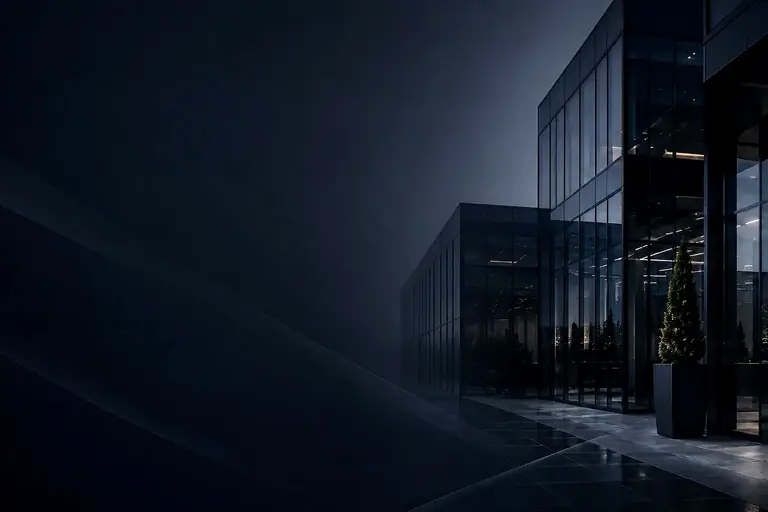
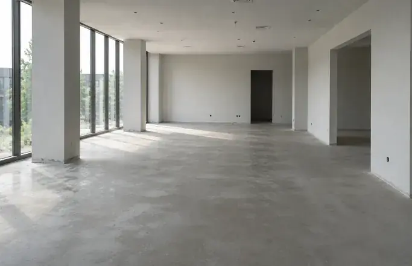
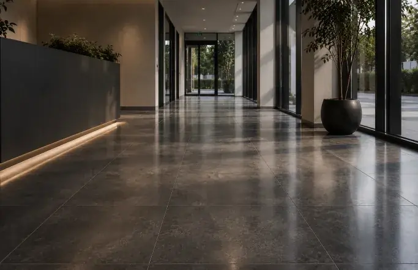
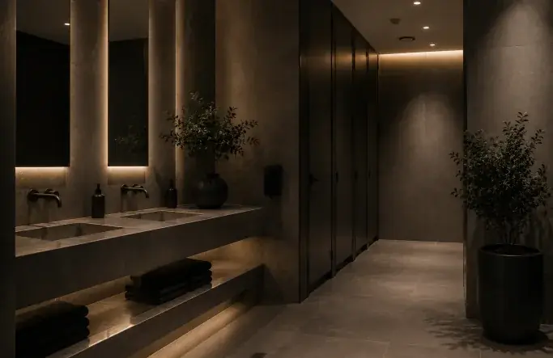
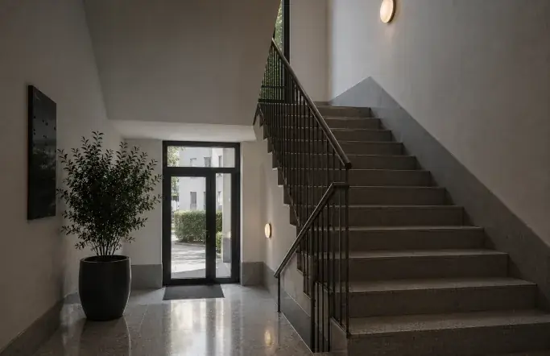
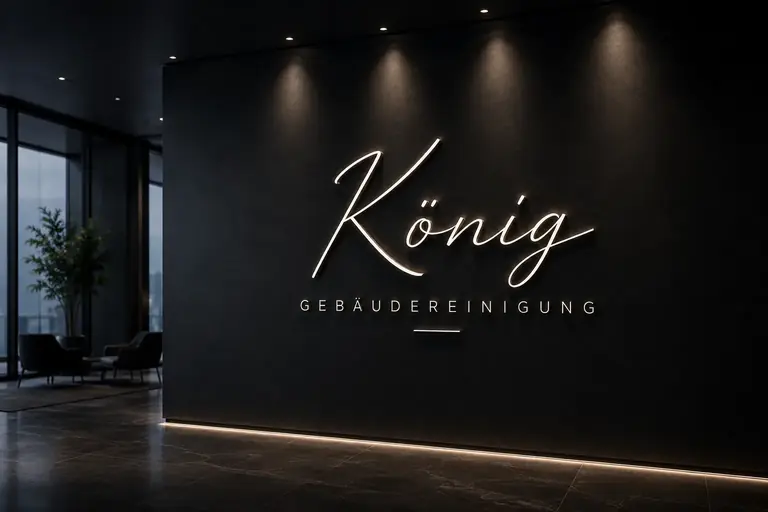
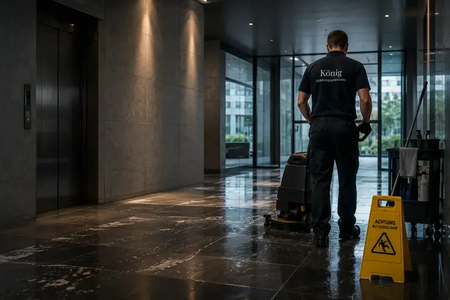

Leistungen
Leistungen unserer Gebäudereinigung in Würzburg
Sechs Bereiche, ein Ansprechpartner. Wir stellen die Leistungen so zusammen, wie Ihr Objekt sie braucht, als laufende Reinigung oder als einmaligen Einsatz.
Gebäudereinigung aus einer Hand
Die meisten Objekte brauchen eine Kombination: regelmäßige Unterhaltsreinigung, dazu ein paar Mal im Jahr die Fenster und gelegentlich eine Grundreinigung der Böden. Statt dafür drei Firmen zu beauftragen, bekommen Sie bei König Gebäudereinigung alles aus einer Hand, mit einem Leistungsverzeichnis und einem festen Ansprechpartner.
Unterhaltsreinigung
Die Unterhaltsreinigung ist das Fundament: Ihre Räume werden in einem festen Rhythmus gereinigt, täglich, mehrmals pro Woche oder wöchentlich. Dazu gehören Böden, Arbeits- und Kontaktflächen, Papierkörbe, Küchen und Sanitärräume. Was wann gemacht wird, steht in einem Leistungsverzeichnis, auf das Sie sich verlassen können.
- Büros, Praxen, Studios und Gewerbeflächen
- Rhythmus von täglich bis wöchentlich
- Leistungsverzeichnis mit festen Intervallen

Glasreinigung
Saubere Fenster lassen Licht herein und zeigen Besuchern schon von außen, dass hier Wert auf Ordnung gelegt wird. Wir reinigen Fenster, Glastüren, Glastrennwände und Schaufenster streifenfrei, auf Wunsch einschließlich Rahmen und Falzen. Außenflächen reinigen wir, soweit sie sicher erreichbar sind.
- Fenster, Glastüren und Trennwände
- Rahmen, Falze und Fensterbänke
- Regelmäßig oder als Einzeltermin

Sanitärreinigung
Kaum ein Raum wird so kritisch betrachtet wie die Toilette. Wir reinigen WC-Anlagen, Urinale, Waschbecken, Armaturen, Spiegel und Fliesen gründlich und entfernen Kalk an den Stellen, an denen er sich gern festsetzt. Auf Wunsch füllen wir Seife, Papier und Handtücher nach, damit nichts fehlt.
- WC-Anlagen, Waschbecken und Armaturen
- Fliesen, Spiegel und Trennwände
- Nachfüllen von Verbrauchsmaterial nach Absprache

Treppenhausreinigung
Im Treppenhaus begegnen sich Mieter, Besucher und Lieferanten. Wir kehren und wischen Stufen und Podeste, reinigen Handläufe, Geländer, Briefkästen, Türen und Lichtschalter und halten Eingangsbereiche und Kellerflure in Ordnung. Für Hausverwaltungen dokumentieren wir die Termine nachvollziehbar.
- Stufen, Podeste und Eingangsbereiche
- Handläufe, Geländer, Türen und Briefkästen
- Für Hausverwaltungen und Eigentümer

Bodenreinigung
Jeder Belag verlangt eine eigene Behandlung. Fliesen, Vinyl, Linoleum, Laminat, Naturstein und Teppich reinigen wir mit passenden Mitteln und Verfahren, damit die Oberfläche lange schön bleibt. Bei stärkerer Verschmutzung übernehmen wir die maschinelle Grundreinigung.
- Hartböden und textile Beläge
- Materialgerechte Reinigungsmittel
- Maschinelle Reinigung größerer Flächen

Sonderreinigung
Manche Aufgaben fallen nur einmal an: die Reinigung nach einem Umbau, vor der Übergabe an neue Mieter, nach einer Veranstaltung oder einfach, weil es wieder richtig sauber werden soll. Wir besprechen den Umfang vorab und reinigen zum vereinbarten Festpreis.
- Reinigung nach Umbau oder Renovierung
- Vor Einzug, Auszug oder Neuvermietung
- Einmalige Tiefenreinigung

Welche Leistungen braucht Ihr Objekt?
Beschreiben Sie uns kurz Räume, Fläche und gewünschten Rhythmus. Wir stellen daraus ein Angebot zusammen, das genau zu Ihnen passt.
- Telefon0151 23884259
- E-Mailinfo@koenig-gebaeudereinigung.com
- EinsatzgebietWürzburg und Umgebung